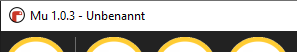

Mu - Meine erste Python-Entwicklungsumgebung

Mu - Installation und erste Schritte
Mu ist ein auf das nötigste beschränkter Python-Code-Editor für Programmieranfänger.
Weniger ist mehr, deshalb hat Mu nur die wesentlichsten Funktionen, so dass Programmieranfänger nicht durch eine verwirrende Programmoberfläche eingeschüchtert werden. Außerdem kann man mit Mu und Python sehr komfortabel Micro:bits programmieren! Python kann so recht einfach und schnell mit Mu erlernt werden, ohne dass es unnötig kompliziert wird.
Download und Installation
Lade von der Seite https://codewith.mu/en/download das für deinen Computer passende Paket herunter und starte das Installationsprogramm.

PortaMu hat den Vorteil, dass du nichts installieren musst und dass alles auch auf einem USB-Stick funktionieren würde (dort allerdings laaangsam). Dazu einfach die heruntergeladene Datei öffnen und in einen zuvor erstellten Ordner “Mu” (zB auf dem Desktop) entpacken. Gestartet wird diese Version durch Doppelklick auf “Launch Mu.bat”. (In der neuesten Version ist noch keine PortaMu-Version vorhanden.)
Wie du unter Windows feststellen kannst, welche Version du benötigst (32-bit oder 64-bit)
Gehe im Windows Explorer zu <Dieser PC> und klicke mit der rechten Maustaste auf Eigenschaften.
Es öffnet sich die System-Info-Seite und unter Systemtyp siehst du, ob es sich um ein 32-bit- oder 64-bit-System handelt.
Installation
Die heruntergeladene Datei starten und alle Schritte bestätigen..

Danach solltest du Mu im Start-Menu finden.
Erste Schritte
Ganz oben in Mu ist eine Titelleiste.

Diese sieht auf deinem Computer vielleicht anders aus, aber ihre Funktion ist immer dieselbe: sie zeigt die Version von Mu an, die du benutzt, zusammen mit dem Namen der aktuellen Python-Datei, die du gerade bearbeitest.
Darunter ist die Symbolleiste:
Wie du sehen kannst, enthält sie runde Buttons. Wenn du mit der Maus über einen Button fährst (ohne ihn tatsächlich anzuklicken), erscheint ein kleiner Tooltip über dem Button, der mehr Informationen darüber enthält, was der Button macht. Probier es aus!
Die meisten Buttons bleiben gleich, aber einige ändern sich, je nachdem, was du gerade machst.
Die Buttons sind gruppiert:
- Betriebsmodus: Dieser Button ist so wichtig, dass er in eine eigene Gruppe kommt. Klicke darauf, um den aktuellen Modus von Mu zu ändern. Jeder Modus hat unterschiedliche Fähigkeiten, je nachdem, was ihr erreichen wollt. (Wenn du mehr über die Modi wissen möchtest, gibt es ein Tutorial über die Modi.) Wir benötigen jetzt zuerst einmal den Modus Python 3.
- Dateisystem: Die Buttons "Neu", "Laden" und "Speichern" in dieser Gruppe ermöglichen es dir, mit Dateien auf der Festplatte deines Computers zu arbeiten.
- Neu: Erstelle eine neue leere Datei.
- Laden: Öffne einen Dateiselektor, um eine Datei zum Laden in Mu auszuwählen.
- Speichern: Speichere die Datei auf der Festplatte deines Computers. Wenn die Datei keinen Namen hat, wirst du nach einem Namen gefragt.
- Wenn Dateien einen Namen haben, werden sie normalerweise alle 5 Sekunden automatisch gespeichert. Deshalb immer einer neuen Datei sofort einen Namen geben!
- Code-Aktionen: Die nächste Gruppe von Buttons kann sich ändern, je nachdem, welchen Modus du gerade verwendest. Sie geben dir interessante Möglichkeiten, mit dem Code, den du geschrieben hast, zu arbeiten und zu experimentieren. Im obigen Beispiel gehören die Buttons "Ausführen", "Debuggen", "REPL" und "Plotter" zu dieser Gruppe.
- Anzeigeeinstellungen: Manchmal ist es wichtig, das Aussehen von Mu zu verändern. Die nächsten drei Buttons ("Hineinzoomen", "Rauszoomen" und "Thema") ändern, wie sich Mu präsentiert. Die Buttons "Hinauszoomen" und "Rauszoomen" machen den Text größer oder kleiner. Der "Thema"-Button schaltet zwischen drei verschiedenen "Themes" hin und her:
- Tag: ein helles, augenfreundliches Thema.
- Nacht: ein dunkles Thema, das dich wie ein Coder in einem Hollywood-Film aussehen lässt.
- Hoher Kontrast: ein Schwarz-Weiß-Thema für diejenigen, die Hilfe brauchen, um Mu's Benutzeroberfläche zu sehen.
- Mu merkt sich, welches Thema du zuletzt benutzt hast, wenn du den Editor neu startest.
- Hilfsprogramme: Die Buttons "Prüfen", "Hilfe" und "Beenden" bieten Möglichkeiten, wie Mu dir bei der Programmierung mit Mu helfen kann.
- Prüfen: Analysiert deinen Code und macht Vorschläge, wie du ihn verbessern kannst.
- Hilfe: Öffnet deinen Standardbrowser auf Mu's Hilfeseite.
- Beenden: stoppt den Editor. Möglicherweise wirst du aufgefordert, deine Arbeit zu speichern, falls du das noch nicht getan hast.
Unter den Buttons befinden sich "Tabs", die dir die geöffneten Dateien anzeigen. Unter den Tabs befindet sich der größte und wichtigste Teil von Mu → der Texteditor.
Hier wird der Code für den aktuell ausgewählten Tab angezeigt. Wenn du die Tabs wechselst, wirst du sehen, dass sich der Code in diesem Bereich ändert. Wenn du auf diesen Bereich klickst und anfängst zu tippen, wird dein Code hier angezeigt.
Während du den Code eingibst, wird Mu die Farbe des Textes ändern, um dir das Lesen des Codes zu erleichtern. Auf der linken Seite befindet sich eine Spalte mit den Zeilennummern für deine Datei. Diese sind nützlich, wenn Python Fehler meldet.
Schließlich ist unten die Fußzeile, in der Mu Meldungen anzeigt.
Hallo von Mu!
Lass uns dein erstes Python-Programm mit Mu erstellen.
- Stelle sicher, dass Mu im Python 3 Modus ist (überprüfe die Fußzeile!). Wenn das nicht der Fall ist, klicke auf den "Modus"-Button und doppelklicke auf den "Python 3"-Modus.
- Klicke auf den "Neu"-Button, dann, bevor du etwas eintippst, klicke auf den "Speichern"-Button und gib deiner Datei einen Namen (zum Beispiel "hello.py"). Das sofortige Speichern solltest du dir unbedingt angewöhnen!
- Gib den folgenden Python-Code in den Editor ein:
print("Hello from Mu!") - Klicke auf den "Ausführen"-Button und die Ausgabe deines Programms wird in einem neuen "Ausgabe"-Bereich zwischen dem Texteditor und der Fußzeile angezeigt.
- Klicke auf den "Stop"-Button, um zum Editieren deines Codes zurückzukehren.
- Die Schritte 3, 4 und 5 sind unten dargestellt:

Herzlichen Glückwunsch! Du hast gerade dein erstes Python-Programm mit Mu geschrieben und ausgeführt.